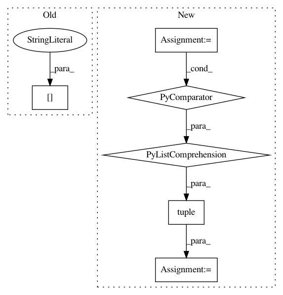

c9fd2c425cb873508ba16221819574400ad2443e,dask_image/ndmeasure/__init__.py,,extrema,#,75
Before Change
extrema_lbl[pos_key] = pos_nd
result = (
extrema_lbl["min_val"],
extrema_lbl["max_val"],
extrema_lbl["min_pos"],
extrema_lbl["max_pos"]
After Change
default_1d = numpy.zeros((1,), dtype=out_dtype)
func = functools.partial(_utils._extrema, dtype=out_dtype)
extrema_lbl = labeled_comprehension(
input, labels, index,
func, out_dtype, default_1d[0], pass_positions=True
)
extrema_lbl = collections.OrderedDict([
(k, extrema_lbl[k]) for k in type_mapping.keys()
])
for pos_key in ["min_pos", "max_pos"]:
pos_1d = extrema_lbl[pos_key]
if not pos_1d.ndim:
pos_1d = pos_1d[None]
pos_nd = _utils._unravel_index(pos_1d, input.shape)
if index.ndim == 0:
pos_nd = dask.array.squeeze(pos_nd)
elif index.ndim > 1:
pos_nd = pos_nd.reshape(
(int(numpy.prod(pos_nd.shape[:-1])), pos_nd.shape[-1])
)
extrema_lbl[pos_key] = pos_nd
result = tuple(extrema_lbl.values())
return result
In pattern: SUPERPATTERN
Frequency: 4
Non-data size: 6
Instances
Project Name: dask/dask-image
Commit Name: c9fd2c425cb873508ba16221819574400ad2443e
Time: 2018-09-30
Author: jakirkham@gmail.com
File Name: dask_image/ndmeasure/__init__.py
Class Name:
Method Name: extrema
Project Name: interactiveaudiolab/nussl
Commit Name: 186d078f6f9de9d7f50da14b29166b77290b93ca
Time: 2020-03-29
Author: prem@u.northwestern.edu
File Name: nussl/ml/networks/modules.py
Class Name: Embedding
Method Name: forward
Project Name: BVLC/caffe
Commit Name: e5fcf030fb2683e7b286b22cde44e3bce2d98229
Time: 2014-05-23
Author: jamt9000@gmail.com
File Name: python/caffe/pycaffe.py
Class Name:
Method Name: _Net_deprocess
Project Name: BVLC/caffe
Commit Name: f1a85a3a495b41f0c8ce9ee7e96cfb61cf44c908
Time: 2014-05-23
Author: jamt9000@gmail.com
File Name: python/caffe/pycaffe.py
Class Name:
Method Name: _Net_deprocess